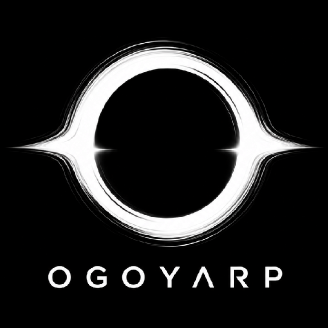

Portofolio — 2026
*mending ngabisin token dari pada ngabisin dana APBN
Web app, chatbot multi-platform, bot WhatsApp otomatis, sampai tools stream — kalau bisa diotomasi, saya tulis kodenya.

Punya ide?Mari wujudkan.
Terbuka untuk proyek web, automation, atau sekadar ngobrol soal teknologi.